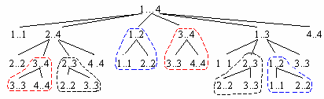
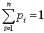
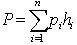
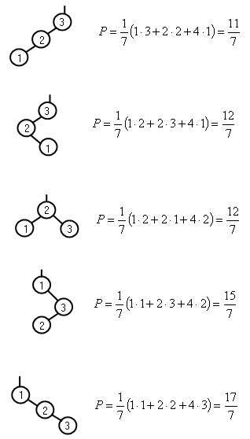
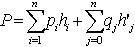
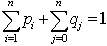
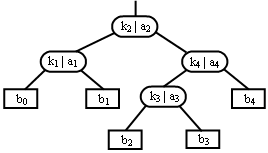
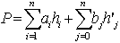
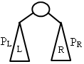
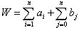

|
|
|
|
|
В типичном случае динамическое программирование применяется к задачам оптимизации. У такой задачи может быть много вариантов решения, их качество оценивается значением какого-либо параметра. Выбирается оптимальное решение, при котором значение этого параметра минимально или максимально. В общем случае оптимум может достигаться для нескольких разных решений. Для оптимизационных задач, решаемых с помощью метода динамического программирования, характерны два признака [3]: 1. Оптимальность для подзадач. При решении оптимизационной задачи необходимо сначала описать структуру оптимального решения. Задача обладает свойством оптимальности для подзадач, если оптимальное решение задачи содержит оптимальные решения её подзадач. При улучшении решения подзадачи, улучшается и решение исходной задачи. Если установлено свойство оптимальности, становится ясно, какое множество вариантов решения подзадач должно войти в решение задачи в целом. 2. Перекрывающиеся подзадачи. Второе свойство обеспечивает эффективность метода динамического программирования – небольшое число решаемых подзадач. При решении задачи происходит неоднократный выход на одни и те же подзадачи. То есть, у оптимизационной задачи имеются перекрывающиеся подзадачи. Пример: процесс перебора поддеревьев при построении оптимального дерева поиска:  Метод динамического программирования использует перекрытие следующим образом: каждая из подзадач решается только один раз и ответ заносится в специальную таблицу. Когда эта же подзадача встречается вновь, программа берет готовое решение из таблицы. Алгоритм, основанный на динамическом программировании, строится следующим образом: 1) выбирается некоторый параметр, относительно которого ищется оптимальное решение. Оптимальное решение дает максимальное или минимальное значение параметра. Иногда оптимум достигается для нескольких разных решений; 2) описывается строение оптимальных решений и схема разделения задачи на подзадачи; 3) выводится рекуррентное соотношение, связывающее оптимальные значения параметра подзадачи и подподзадачи; 4) двигаясь снизу вверх, вычисляется оптимальное значение параметра для подзадач; 5) пользуясь полученной на предыдущих шагах информацией, на каждом шаге определяется оптимальное решение и, в конце концов, оптимальное решение задачи. Основную часть работы составляют шаги 1 – 4. Если интересует только оптимальное значение параметра, то шаг 5 не нужен. Если же отыскивается другая информация, связанная с оптимальным значением параметра, то попутно вычисляется и запоминается дополнительная информация при выполнении шага 4.
Программирование сверху – внизРешение задачи методом динамического программирования можно реализовать и сверху вниз. Используется тот же прием исключения повторного решения. Для этого нужно запоминать ответы к уже решенным подзадачам в специальной таблице. Сначала вся таблица пуста, то есть заполнена специальным значением, символизирующим отсутствие решения для подзадачи. Когда в процессе решения задача встречается в первый раз, её решение заносится в таблицу. В дальнейшем решение подзадачи берется из таблицы, когда подзадача встречается снова. В этом случае возможна только рекурсивная схема алгоритма, следующая схеме разделения задачи на подзадачи и подзадач на подподзадачи. За счет учета решенных задач исключается повторный вход в рекурсию для этих подзадач, и экспоненциальная трудоемкость рекурсии сводится к полиномиальной. Но метод программирования “снизу вверх” обычно эффективнее, чем рекурсия с запоминанием ответов, поскольку не предполагает затрат на проверку в таблице присутствия решения и реализацию самой рекурсии. Но если нахождение оптимума не требует решения всех подзадач, то метод решения “сверху вниз” имеет то преимущество, что решаются лишь те подзадачи, которые действительно нужны. Оптимальное дерево поискаМетод динамического программирования используется в алгоритме построения оптимального двоичного дерева поиска [5]. Для рассмотренных ранее BST - деревьев используется предположение, что частота обращения к узлам одинакова, то есть все ключи равновероятны при поиске. Но существуют случаи, когда имеется информация о вероятности обращения к отдельным ключам дерева. Для таких деревьев характерно, что множество таких ключей постоянно и не подвергается включениям и удалениям. Дерево сохраняет постоянную структуру. Примерами служат сканер транслятора, который для каждого идентификатора определяет, является ли он ключевым словом языка программирования или сканер ключевых слов в поисковых системах, по которым ищутся разделы тем учебника или перечень URL-адресов в поисковых системах сети Интернет и т.п. Проведенные статистические измерения, проведенные на сотнях транслируемых программ или обращения при поиске в сети, дают точные сведения о частоте обращения к отдельным ключам, и следовательно, о вероятности обращения к ним. Пусть
pi - вероятность обращения к узлу i с
ключом ki ,  Необходимо организовать дерево поиска так, чтобы общее число шагов поиска для достаточно большого количества обращений было минимальным. Для этого припишем каждому узлу вес. Узлы, к которым часто обращаются, считаются тяжелыми, а посещаемые редко – легкими. В таком дереве вводится понятие общей взвешенной длины пути поиска – суммы длин всех путей от корня к каждому узлу умноженных на вероятность обращения к этим узлам:  , где hi – глубина i - го узла +1, а pi – вероятность обращения к этому узлу. Необходимо минимизировать взвешенную длину пути для заданного распределения вероятностей. В качестве примера рассмотрим множество ключей 1, 2, 3 с вероятностями обращения р1 = 1/7, р2 = 2/7, р3 = 4/7 Возможны 5 разновидностей дерева из этих ключей:  Из примеров видно, что наилучшим случаем, является отнюдь не сбалансированное дерево, а вырожденное дерево. Пример сканера транслятора показывает, что при решении оптимизационной задачи следует учитывать и случаи поиска идентификаторов, не являющихся ключевыми словами. Все слова, не являющиеся ключевыми в дереве можно обозначить специальными узлами. Каждый такой узел означает группу слов, которые в лексикографическом порядке находятся между ключевыми словами ki и ki+1. Такие специальные узлы являются внешними узлами (листьями) в оптимальном дереве поиска. Если известна и вероятность того, что аргумент поиска х лежит между ключами ki и ki+1, это может повлиять на структуру оптимального дерева поиска. Обозначим вероятность специальных узлов через qi. Обобщим формулу взвешенной длины дерева поиска:  ,где
 При построении оптимального дерева вместо вероятностей pi и pj удобнее использовать частоты обращений к узлам: ai - частота поиска ключа ki, bj - частота поиска слова x (ki < x < ki+1). Тогда оптимальное дерево можно изобразить так:  , где b0 - число поисков слов x < k1, bi - число поисков слов ki < x < ki+1, bn - число поисков слов x > kn.
Общая взвешенная длина пути равна:  Итак, имея экспериментально измеренные частоты ключевых слов и групп не ключевых слов можно построить оптимальное дерево поиска с минимальной общей взвешенной длиной пути. Число возможных конфигураций дерева из n узлов растет экспоненциально и при больших n кажется невозможным найти оптимизм. Но оптимальное дерево обладает важным свойством: все поддеревья оптимального дерева также оптимальны. На приведенном выше рисунке если дерево с корнем k2 оптимально, то оптимальны и его поддеревья с корнями k1, k3, k4. Поэтому алгоритм нахождения оптимального дерева строит все большие и большие поддеревья начиная с отдельных узлов, как наименьших возможных поддеревьев. Таким образом,. оптимальное дерево можно построить методом динамического программирования снизу вверх от листьев к корню. Рассмотрим поддерево с некоторым корнем ki. 
Пусть PL и PR – взвешенная длина левого и правого оптимальных поддеревьев корня. Общая взвешенная длина поддерева с корнем равна: P = PL + W + PR
, где W – вес поддерева, равный сумме частот всех входящих в него узлов: 
Средняя взвешенная длина пути к узлу в поддереве равна P/W. Для построения оптимального дерева располагаем ключи {k1, k2, . . .,kn} в возрастающем порядке и в том же порядке располагаем соответствующие веса ключей {a1, a2, . . . ,an} и веса специальных узлов {b0, b1, . . . ,bn}. Двигаясь снизу вверх, постепенно выстраиваем оптимальное дерево из оптимальных поддеревьев. Обозначим через Tij – некоторое оптимальное поддерево, включающее ключи {ki, …,kj} из исходного множества ключей. Пусть wij – вес поддерева Tij, а Pij – взвешенная длина пути поддерева Tij.
Эти величины определяются рекуррентными соотношениями:
1) Вес поддерева из 0 узлов равен:
2) Вес поддерева Tij из h = j – i узлов {ki, …, kj} равен:
3) Длина взвешенного пути поддерева из 0 узлов равна:
4) Общая взвешенная длина пути поддерева из j - i узлов:
Существует приблизительно 1/(2n2) поддеревьев в пределах множества ключей и групп слов {x0, k1, x1, k1, …,kn, xn}, для которых нужно вычислить минимум взвешенной длины Pij. Причем для каждого поддерева нужно перебрать 0 ≤ i - j ≤ n возможных значений индекса корня r, чтобы найти корень, для которого взвешенная длина Pij минимальна. То есть, общий поиск потребует 1/(6n3) проб различных поддеревьев. Сложность этого алгоритма можно свести к O(n2), воспользовавшись следующей эвристикой: поддерево Tij имеет два возможных поддерева Ti,,j-1 и Ti+1,j. Если Ti,j-1 и Ti+1,j оптимальны и для них найдены корни ri,j-1 и ri+1,j, то корень дерева Tij лежит между этими корнями: ri,j-1 ≤ rij ≤ ri+1,j.
То есть, корень можно искать не на всем интервале [ki , kj], а на интервале между корнями [ri,j-1, ri+1,j].
Все приведенные выше отношения и эвристики положены в основу алгоритма построения оптимального дерева. Общий ход алгоритма следующий: Обозначим ширину поддерева h=j - i; 1. Вычисляем веса всех поддеревьев снизу вверх, начиная с wii для поддеревьев шириной h = 0, 1, 2, …, n, пользуясь уравнениями 1) и 2).
2. Задаем общие взвешенные длины путей для поддеревьев шириной 0 и 1: Pii = wii , для h = 0; Pij = wij + Pii + Pjj, для h=1.
3. Задаем корни поддеревьев, состоящих из одного узла, равными номерам узлов.
4. Далее, пользуясь уравнением 4) постепенно вычисляем минимальные длины Pij и соответствующие им корни rij для поддеревьев с шириной 2, 3, …, n. В конце мы получаем индекс корня всего дерева T0,n и корни его оптимальных поддеревьев.
Для решения задачи определим следующие таблицы: key [1 .. n] – ключи key1,…, keyn, a [1 .. n] – массив весов ключей, b [0 .. n] – массив весов групп не ключевых значений, w [0 .. n][0 .. n] – таблица весов поддеревьев Tij, p [0 .. n][0 .. n] – таблица минимальных взвешенных длин Tij, r[0 .. n][0 .. n] – таблица корней rij поддеревьев Tij.
Алгоритм построения таблиц оптимального дерева:
Root_Opt_Tree (a [1 .. n], b [0 .. n], w [0 .. n][0 .. n], p [0 .. n][0 .. n], r[0 .. n][0 .. n]) 1. for i ← 0 to n 2. do wi,i ← bi 3. for j ← i+1 to n 4. do wi,j ← wi,j-1 + ai + bj
5.
for i ← 0 to n
6. do pi,i ← wi,i
7.
for
i ← 0
to n -1
8. do j ← i+1 9. pi,j ← wi,j + pi,i + pj,j 10. ri,j ← j 11. for h ← 2 to n 12. do for i ← 0 to n - h 13. do j ← i+h 14. t ← ki,j-1 15. min ← pi,t-1 + pt,j 16. for m ← t+1 to ri+1,j 17. do x ← pi,m-1 + pm j 18. if x < min 19. then t ← m 20. min ← x 21. pi,j ← wi,j + min 22. ri,j ← t
Построение оптимального дерева выполняется на основе трассировки таблицы корней r[0 .. n][0 .. n]. Рекурсивный алгоритм построения оптимального дерева имеет вид:
Create_Opt_Tree (key [1 .. n], r[0 .. n][0 .. n], i, j) 1. if i = j 2. then x ← Create_Speshial_Node () 3. return x 4. x ← Create _Node () 5. left [x] ← Create_Opt_Tree (key, r, i, ri,j-1) 6. m ← ri,j 7. key [x] ← key [m] 8. right [x] ← Create_Opt_Tree (key, r, ri,j, j) 9. return x
Первый вызов функции Create_Opt_Tree имеет вид: root [T] ← Create_Opt_Tree (key, r, 0, n).
|
|
|